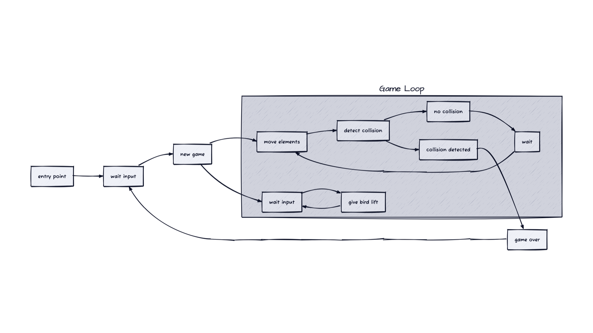
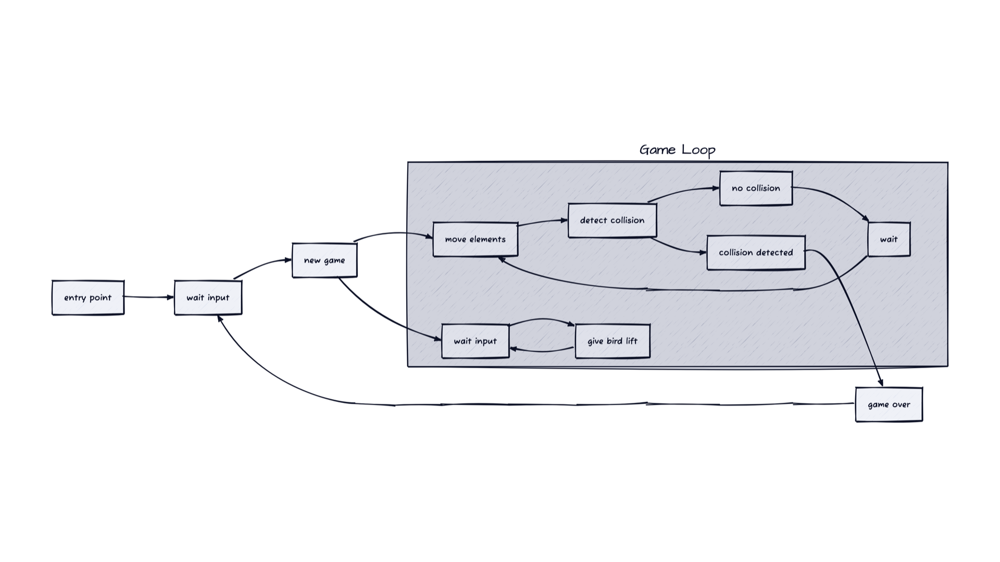
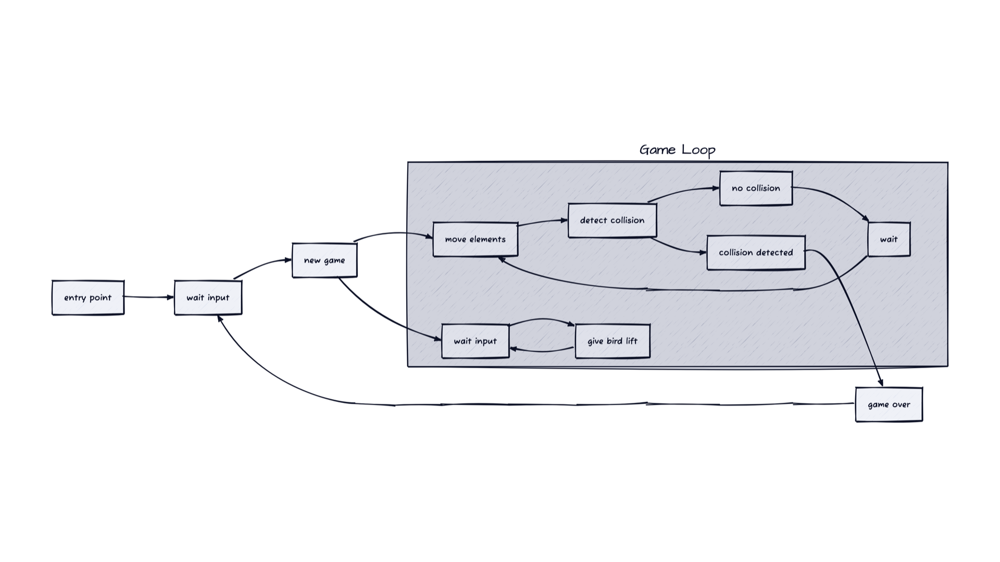

Help
Slide: 1/5
Desktop:
- Press ? to toggle this help.
- Press right arrow for next slide.
- Press left arrow for previous slide.
- Click for next slide.
- Right click for previous slide.
Mobile:
- Three finger tap to toggle this help.
- Tap for next slide.
- Two finger tap for previous slide.
